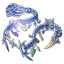

추천 광추
순수 사유의 세례
디버프 수에 따른 치명타 피해 및 방어력 무시
효과 자세히
치명타 피해 +20%, 적 디버프당 +8%(최대 3스택). 필살기 명중 후 피해 +36%·추가 공격 방어력 24% 무시(2턴).
고민, 그리고 행복
추가 공격 피해와 디버프 수급
효과 자세히
치명타 확률 +18%, 추가 공격 피해 +30%. 추가 공격이 부여한 온순 스택당 아군 치명타 피해 +12%(최대 2스택).
침묵만이
적 2기 이하에서 치명타 확률
효과 자세히
공격력이 32% 증가. 필드 위의 적이 2명 이하일 경우, 치명타 확률이 24% 증가
별바다 순항
치명타 확률과 처치 후 공격력
효과 자세히
치명타 확률이 16% 증가. 장착한 캐릭터는 HP 백분율이 50% 이하인 적에게 가하는 치명타 확률이 추가로 16% 증가. 장착한 캐릭터는 적을 처치한 후 공격력이 40% 증가. 지속 2턴
야경 속에서
속도와 스킬·필살기 피해
효과 자세히
치명타 확률 +18%. 전투 속도 100 초과 10마다 일반 공격·스킬 피해 +6%, 필살기 치명타 피해 +12%(최대 6스택).
추천 유물
사수에 잠수한 선구자 4 · 질주하는 늑대의 도람 왕조 2
- 머리
 주옵션HP부옵션치명타 확률 · 치명타 피해 · 공격력% · 속도
주옵션HP부옵션치명타 확률 · 치명타 피해 · 공격력% · 속도 - 손
 주옵션공격력부옵션치명타 확률 · 치명타 피해 · 공격력% · 속도
주옵션공격력부옵션치명타 확률 · 치명타 피해 · 공격력% · 속도 - 몸통
 주옵션치명타 확률 / 치명타 피해부옵션치명타 확률 (주옵션 제외) · 치명타 피해 (주옵션 제외) · 공격력% · 속도
주옵션치명타 확률 / 치명타 피해부옵션치명타 확률 (주옵션 제외) · 치명타 피해 (주옵션 제외) · 공격력% · 속도 - 다리
 주옵션속도 / 공격력%부옵션치명타 확률 · 치명타 피해 · 공격력% (주옵션 제외) · 속도 (주옵션 제외)
주옵션속도 / 공격력%부옵션치명타 확률 · 치명타 피해 · 공격력% (주옵션 제외) · 속도 (주옵션 제외) - 구체
 주옵션허수 피해 증가부옵션치명타 확률 · 치명타 피해 · 공격력% · 속도
주옵션허수 피해 증가부옵션치명타 확률 · 치명타 피해 · 공격력% · 속도 - 매듭

주옵션공격력%부옵션치명타 확률 · 치명타 피해 · 속도
이 조합을 추천하는 이유
선구자 → 디버프를 부여한 턴에는 치명타 효과 증가. 도람 → 파티 추가 공격으로 자신의 추가 공격 피해와 치명타 피해 증가.
사수에 잠수한 선구자 4 · 질주하는 늑대의 도람 왕조 2
- 머리
주옵션HP부옵션치명타 확률 · 치명타 피해 · 공격력% · 속도
- 손
주옵션공격력부옵션치명타 확률 · 치명타 피해 · 공격력% · 속도
- 몸통
주옵션치명타 확률 / 치명타 피해부옵션치명타 확률 (주옵션 제외) · 치명타 피해 (주옵션 제외) · 공격력% · 속도
- 다리
주옵션속도 / 공격력%부옵션치명타 확률 · 치명타 피해 · 공격력% (주옵션 제외) · 속도 (주옵션 제외)
- 구체
주옵션허수 피해 증가부옵션치명타 확률 · 치명타 피해 · 공격력% · 속도
- 매듭 주옵션공격력%부옵션치명타 확률 · 치명타 피해 · 속도
이 조합을 추천하는 이유
선구자 → 디버프를 부여한 턴에는 치명타 효과 증가. 도람 → 파티 추가 공격으로 자신의 추가 공격 피해와 치명타 피해 증가.
이 정도면 잘 키웠다
선택한 세팅 기준 · —는 확인된 수치 없음
4.7 세팅 시트의 추가 공격 추천입니다.
| 스탯 | 추천 스탯 | 준종결 | 종결 |
|---|---|---|---|
| 공격력 | 3500 | — | — |
| 치명타 확률 | 87.5%[1]귀납 치명타 확률 최대 12.5% 참고. | — | — |
| 치명타 피해 | 130%[2]귀납 치명타 피해 30% 참고. | — | — |
- 명함·전광
선구자·도람의 명함·전용 광추 세팅입니다.
| 스탯 | 추천 스탯 | 준종결 | 종결 |
|---|---|---|---|
| 공격력 | — | — | 3000 |
| 속도 | — | — | 134 |
| 치명타 확률 | — | — | 87.5% |
| 치명타 피해 | — | — | 150% |
성혼과 추천 돌파
성혼 1은 귀납 초기 치명타와 상한, 성혼 2는 디버프가 많은 보스 대상의 추가 피해를 높입니다.
1귀납 최대 +4·전투 시작 4스택추천
행적 귀납의 중첩 스택 수 상한이 4스택 증가. 전투 시작 시 귀납 4스택을 즉시 획득. 먼저 행적 귀납을 개방해야 한다
2추가 공격 명중 시 디버프당 공격력 20% 추가 피해추천
특성의 추가 공격이 목표를 명중할 시, 목표가 디버프 효과를 1개 보유할 때마다 추가로 Dr. 레이시오 공격력의 20%만큼 허수 속성 추가 피해를 가한다. 해당 효과는 추가 공격을 할 때마다 최대 4회 발동된다
3필살기 +2 · 일반 공격 +1
필살기 +2 · 일반 공격 +1
4특성 발동마다 에너지 +15pt
특성 발동 시 Dr. 레이시오가 추가로 에너지를 15pt 회복
5전투 스킬 +2 · 특성 +2
전투 스킬 +2 · 특성 +2
6필살기 표식 추가 공격 +1회·특성 추가 공격 피해 +50%
현자의 짧은 생각의 발동 효과가 추가로 1회 증가하고, 특성의 추가 공격으로 가하는 피해가 50% 증가
추천 파티


기본 운영과 행적
기본 운영
적에게 디버프 3개를 확보한 뒤 스킬로 추가 공격을 확정하세요. 필살기 후 아군이 같은 적을 공격하면 현자의 짧은 생각에 따라 추가 공격합니다.
행적 우선순위
특성 > 전투 스킬 > 필살기 > 일반 공격. 귀납·추리·추론 행적을 모두 열어 주세요.
아하 속도 계산기 →